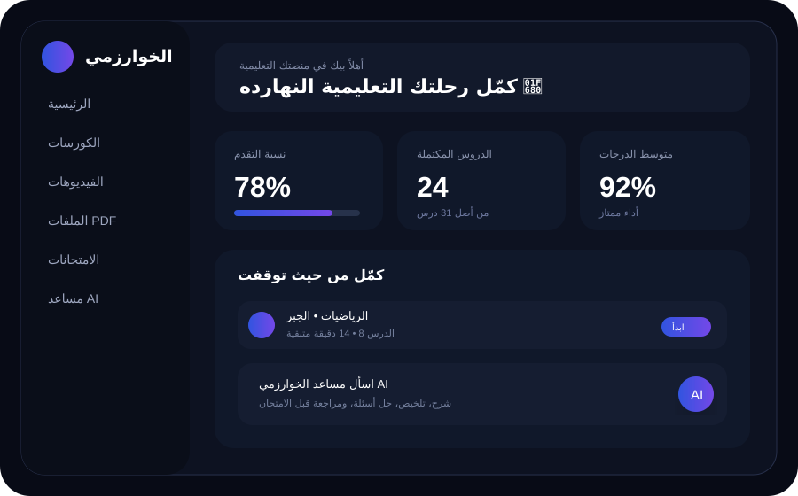

رياضيات • الجبر
أولى إعدادي • شرح ومراجعة
كل ما تحتاجه في مكان واحد: شرح الرياضيات، فيديوهات، ملفات PDF، اختبارات، متابعة مستواك، وأسئلة مباشرة مع المستر ومساعد AI.

اضغط على أي خاصية للانتقال إليها بحركة سلسة.
محتوى رياضيات مرتب حسب الصف والمستوى.
أولى إعدادي • شرح ومراجعة
أولى ثانوي • شرح خطوة بخطوة
تالتة ثانوي • بنك أفكار
شاهد واسأل عن نفس الفيديو بدون ما تخرج من الصفحة.
رياضيات • 18 دقيقة
رياضيات • 25 دقيقة
رياضيات • 32 دقيقة
مذكرات ومراجعات الرياضيات في مكان واحد.
اختبر نفسك واحصل على نتيجتك مباشرة.
اختر الصف والاختبار، حل في الوقت المحدد، وبعد التسليم راجع النتيجة والأخطاء.

اسأل عن مسألة، اطلب شرح خطوة بخطوة، لخص PDF، أو اسأل عن فيديو محدد.
افتح شات AIاسأل عن المسألة أو اطلب توضيحًا.